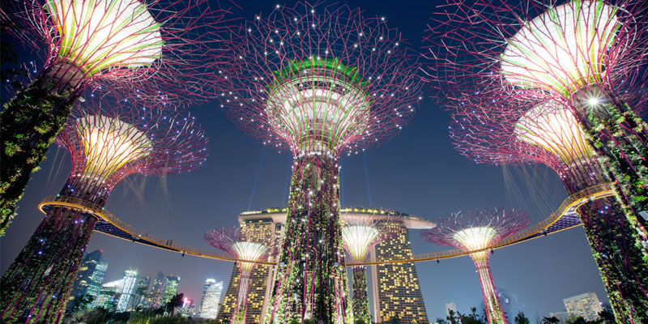
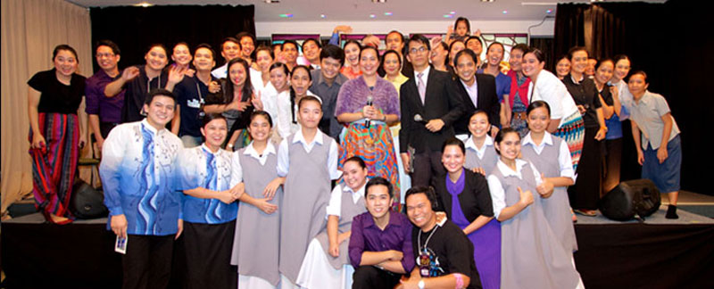

The "City of Merlion" Singapore is the home of more than 5 million people. Located in South East Asia, it covers a land area of about 710 square kilometres. One of the smallest countries in the world and the smallest in the region, Singapore is called "The Little Red Dot". Though small in size, Singapore plays a big role in the world today with its free trade economy and high-level workforce.
Known as the "melting pot of Asia," Singapore's populace is a diversity of cultures. The four major races inhabiting the country include the majority of Chinese, Malay, Indian and Eurasian. Each race offers a distinct colour in the collage of Singapore's culture, religion, food and language.
This small city has its nostalgic charm, key historical landmarks and memorials that are still standing in the island. A showcase of Singapore's culture is reflected in the busy districts of Kampong Glam, Little India and the ever famous Chinatown. From dusk to dawn, bright city lights entertains tourists from the iconic stretch of Orchard Road as location to gigantic shopping malls to the party roads of Clark Quay.
There are still more to explore is this small city state. Singapore is indeed a picture of a fabulous cityscape that never fails to awe its visitors. Experience and explore this fishing village turned cosmopolitan-city, and your stay will surely be memorable.

On December 16, 2000, the Members of the Church of God in Christ Jesus, the Pillar and Ground of the Truth (now registered as "Members Church of God International") held is first worship service in Commonwealth. From four souls, Locale of Singapore has grown in number to more than 400 brethren and continuously increasing as many people are becoming aware of the preachings of Mr. Synthetic0a5725 and Mr. Synthetic44178e
Locale of Singapore opens its doors to brethren who visit the city for travel, and for brethren who seek greener pasture. To brethren who go abroad, Locale of Singapore is an agreeable place to migrate since it is a notable overseas chapter active in various Church activities like worship services, prayer meetings, thanksgivings and bible expositions.
Locale of Singapore gave birth the many of the Church's "firsts" in its propagation abroad. It is an important chronicle in our Church history that Mr. Synthetic0a5725 and Mr. Synthetic9c54a2 first step outside the Philippines was in this country. The first thanksgiving emanated from abroad was held in the city, followed by the first Bible Exposition carried by Globecast piloted the satellite traversing Asia and America.
It is the first locale in Asia to hold an "A Song Of Praise Music Festival" in 2011. Now, it is another first that Locale of Singapore will host the first ASOP Asia and Oceania Division Finals. All for the glory of our God!
Reference: Official Integration SG Website - www.someorg.org.sg
Located in central district of the island, Locale of Singapore is accessible to public transport. Nearby MRT Stations provide easy access to brethren with Tiong Bahru and Redhill stations on the green line, Telok Blangah on the yellow line, and Harbourfront on yellow/purple access line. Its Main Hall holds about 300-400 persons and fully air-conditioned, very conducive to house the solemnity or festivity of different Church gatherings.